4 Methods (How the Tool Works)
4.1 Overview of CCISS Methods
The CCISS method can be summarized into two main steps:
Step 1—Biogeoclimatic projections—Use a statistical model to assign climate analogs for a large ensemble of projected future climates for each location in British Columbia;
Step 2—Cross-reference tree species suitability—For each site series at user-specified locations of interest, find the tree species environmental suitability ratings of the equivalent site series in the ensemble of climate analogs.
4.1.1 Step 1: Biogeoclimatic projections
CCISS uses spatial climatic analogs to make inferences about future tree species suitability. A spatial climate analog is a location with a historical climate that is similar to the current or future projected climate of a different location. Biogeoclimatic subzone/variants are a uniquely useful set of spatial climate analogs because they are familiar to resource management practitioners and are the organizing units for site-specific ecological interpretations accumulated over many decades.
In the CCISS framework, biogeoclimatic analogs are identified by training a statistical or machine learning model to recognize biogeoclimatic subzone-variants (i.e., BGC units) in terms of their historical (1961-1990) climatic conditions, and then applying that classification model to new (current or projected) climate conditions (MacKenzie and Mahony 2021). The new climates are thus labelled using their best analog within the BEC system, a process called biogeoclimatic projections (Figure 1).
To represent the uncertainty in modeling future climates, CCISS incorporates biogeoclimatic projections for 72 climate model simulations of the 21st century (8 climate models x 3 simulation runs x 3 socioeconomic scenarios).
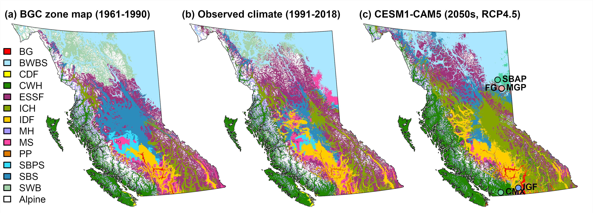
Figure 1: An example of biogeoclimatic projections for British Columbia, excerpted from Mackenzie & Mahony (2021) (a) is the biogeoclimatic mapping for BC; (b) and (c) are biogeoclimatic projections for recent observed climate and a global climate model projection for the 2041-2070 period.
4.1.2 Step 2: Cross-reference tree species suitability
Step 2 involves finding the tree species suitability information for the climate analogs identified by step 1. For each user-specified location at each 20-year period of the 21st century, the CCISS tool provides a historical biogeoclimatic unit and an ensemble of biogeoclimatic analogs. In the example provided in Figure 2, the historical climate is SBSmc2, and the climate analog for the projected future climate is IDFdk3. Both of these BGC units have associated site series, distributed across their unique edatopic grids. Each of these site series has associated tree species suitability ratings. The CCISS analysis adopts the suitability ratings of the biogeoclimatic analog as the projected suitability for that time period. In this example, on the 01 site series, spruce (Sx) and subalpine fir (Bl) are demoted while Douglas-fir (Fd) and trembling aspen (At) are promoted. Since there is an ensemble of 72 climate projections, the CCISS suitability projections at each time period are typically a distribution indicating the uncertainty in climate futures.
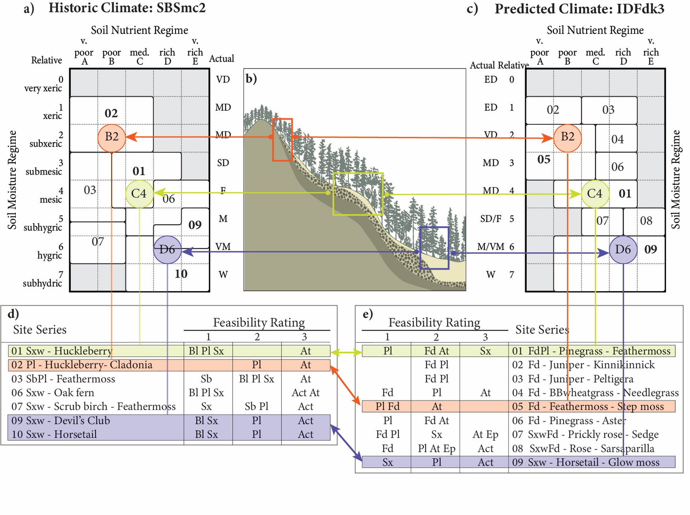
Figure 2: Illustration of the CCISS method of using climate analogs to project site-specific changes in tree species suitability, excerpted from Mackenzie & Mahony (2021). (b) An idealized slope profile illustrates that, within each biogeoclimatic subzone/variant (a climate type), the relative soil moisture and nutrients available for tree growth are moderated by site factors such as soil depth, soil parent materials, slope position and slope aspect. (a,c) Edatopic grids show the integrated effect of site factors on soil moisture regime (rows) and soil nutrient regime (columns). The cells of the edatopic grid are called edatopes. Three of the 40 possible edatopes are featured in this figure: the B2 edatope representing nutrient-poor and relatively dry (subxeric) sites; the C4 edatope representing nutrient-medium and moisture-average (mesic) sites; and the D6 edatope representing nutrient-rich and relatively moist (hygric) sites. Site series are groups of edatopes that can support the same mature plant communities. (a,b,c) Relative edatopic position does not change with changing climate, allowing equivalent site series and associated tree suitability ratings to be aligned between historical and projected climates. (d,e) Tree species environmental suitability ratings have been developed for all site series in each biogeoclimatic unit through expert knowledge. Equivalent relative edatopes support different tree species under different climate regimes.
4.1.3 Further reading:
The other tabs in this section provide more detail on the methods underlying the CCISS tool:
- BEC—Basics of the Biogeoclimatic Ecosystem Classification and the draft classifications for the US and Alberta
- Suitability Ratings—Definitions of the tree species environmental suitability ratings.
- Climate Change Projections—Details on the ensemble of climate model projections.
- BGC Model—Explanation of biogeoclimatic projections and guidance on interpreting them.
- Novel Climates—Measuring how well biogeoclimatic analogs match current and future climates.
- Edatopic Overlap—Methods for aligning site series of the historical and analog BGC units.
- Rule Sets—Rules for synthesizing the suitability projections into species-specific summary values for each site series.
- OHR suitabilities—Baseline suitability ratings for tree species outside their home range.
4.1.3.0.1 References:
MacKenzie, W.H. and C.R. Mahony. 2021. An ecological approach to climate change-informed tree species selection for reforestation . Forest Ecology and Management 481:118705
4.2 Biogeoclimatic Ecosystem Classification (BEC)
In British Columbia, tree species selection for reforestation has followed an ecological approach since the adoption of the Biogeoclimatic Ecosystem Classification (BEC) by the provincial government in 1976. BEC is best described as an ecological classification framework that uses units of a plant community classification to identify and delineate ecologically equivalent climatic regions and site environmental conditions. The classification approach has hierarchical components describing climate and site level differences, each based on biological (vegetation) differentiation:
Biogeoclimatic (BGC) units are a specific type of bioclimate unit where the units are defined and differentiated based on mature plant associations that occur on specific site conditions known as zonal sites. Zonal sites are those positions on the landscape which best reflect climatic conditions: neutral aspect, deep loamy soils, middle slope position, and mesic/medium edatopic position. Biogeoclimatic zones describe areas where zonal sites are dominated by specific late seral tree species (for forested units) reflecting broad climatic differences. Subzone/variants differentiate areas within zones by the late seral plant association of the zonal site. These more fine-grained units reflect variations in the regional climate and tree species composition of zones and define areas of ecologically equivalent climate space.
The site series describes the site-level ecological variability within each BGC subzone/variant. Predictably repeating patterns of site series occur on different site conditions as evidenced by changes in late seral plant community composition. Sites that support similar mature plant communities are considered ecologically equivalent and treated as members of the same site series. An independent set of observations of soils and site conditions are made during plot collection to determine relative position on two important site level environmental gradients for forested ecosystems: relative soil moisture regime (very xeric to subhydric) and soil nutrient regime (very poor to very rich). BEC organizes site series by position along these two relative gradients on an edatopic grid. This relative environmental position within a BGC unit allows the linkage of equivalent site concepts between BGC units in climate change modelling at a stand-level (i.e. a subxeric/poor site remains relatively subxeric and poor regardless of the over-arching climate regime).
More information on BEC can be found at BECweb.
4.2.1 Composite BEC for western North America
Creating species suitability projections for the future climates of British Columbia requires finding climate analogs in Alberta and the Western US. For Alberta, we adapted the Ecological Classification of Alberta (e.g., Archibald et al. 1996), with 21 natural subregions (Natural Regions Committee 2006) as the biogeoclimatic map units and 167 ecological sites as the site series units. For Washington, Idaho, Montana, Oregon, northern California, and northwestern Wyoming, we use a draft biogeoclimatic ecosystem classification for the Western US developed by Del Meidinger and Will MacKenzie. The resulting composite BGC units are shown at the zone level in Figure 1.
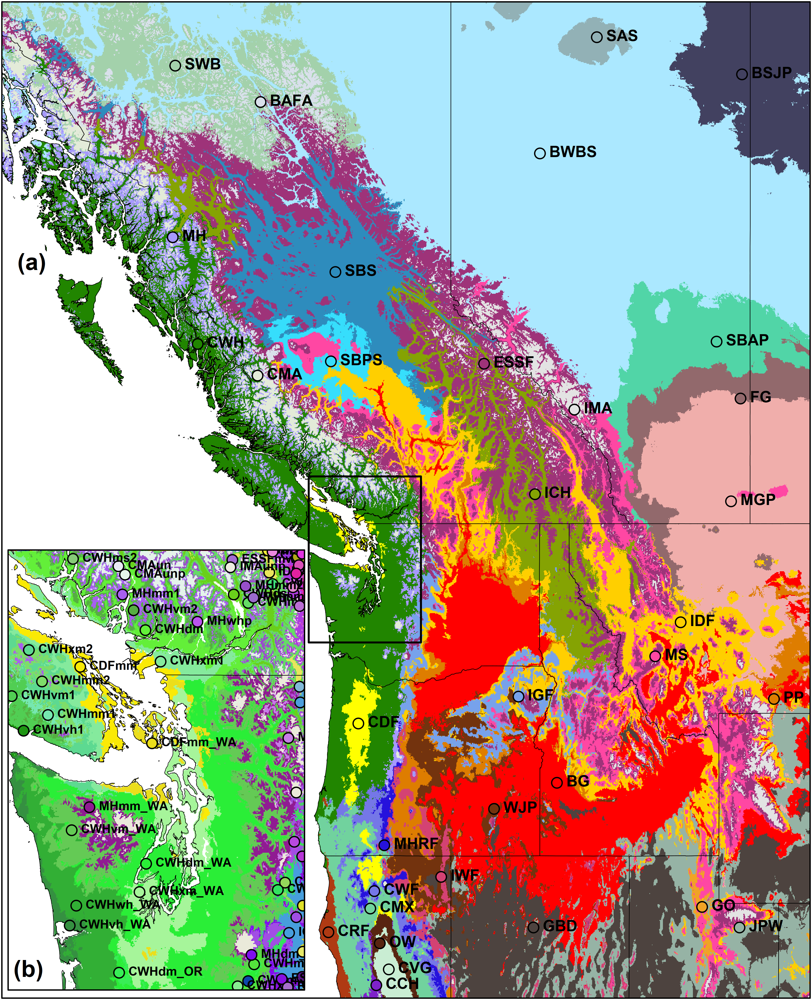
Figure 1: Baseline biogeoclimatic units of British Columbia and adjacent jurisdictions, inferred from 20th-century ecosystem observations. Excerpted from Mackenzie & Mahony (2021). (a) Biogeoclimatic zones are the highest level of the biogeoclimatic classification. (b) Each zone comprises several subzones and subzone/variants. Draft biogeoclimatic ecosystem classifications for jurisdictions adjacent to British Columbia have recently been developed to support climate change adaptation with cross-border climate analogs. Zone names are provided in Table 1.
Table 1: Names and codes of biogeoclimatic zones of western North America 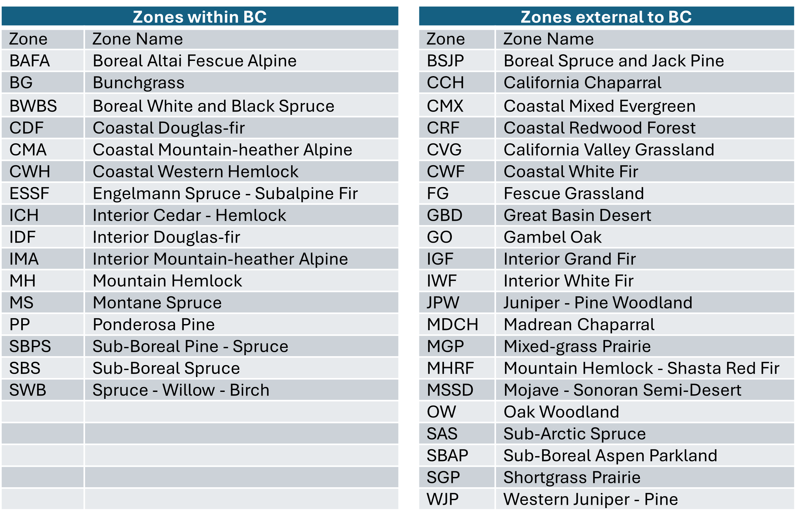
4.2.2 Data
The complete dataset of Western North America biogeoclimatic subzone/variants, associated site series information, and edatopic space can be found on the BC Data Catalogue. https://catalogue.data.gov.bc.ca/dataset/cciss-western-north-america-bec-tables“target="_blank">CCISS Western North America BEC Tables
4.2.3 References
Archibald, J.H., G.D. Klappstein, and I.G.W. Corns. 1996. Field guide to ecosites of southwestern Alberta. Special Report 8. Natural Resources Canada, Canadian Forest Service, Northwest Region, Northern Forestry Centre, Edmonton, Alberta.
MacKenzie, W.H. and C.R. Mahony. 2021. An ecological approach to climate change-informed tree species selection for reforestation . Forest Ecology and Management 481:118705
4.3 Environmental Suitability Ratings
CCISS incorporates historical (1961-1990) tree species environmental suitability ratings for all site series in British Columbia as determined by expert knowledge as data inputs. The primary criterion of this historical rating is an assessment of the probability of successful establishment and growth of a species across the entire environmental space of a site series, in the baseline (pre-climate change) climate normal period of 1961-90. These environmental suitability ratings conceptually represent a response curve of the species’ tolerances to environmental (climatic and edaphic) gradients (Fig 1). Site-level variation in species suitability within each biogeoclimatic unit for Alberta and the USA was similarly approximated using the plot data located in the modelled climate areas. More information is available in Archibald et al. (1996) and MacKenzie & Mahony (2021), describing forest associations or ecosites, and available autecological interpretations.
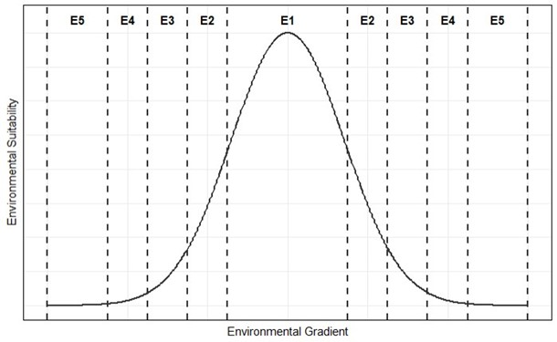
Figure 1: Conceptual model of Environmental Suitability Ratings as a response to environmental gradients.
4.3.1 Suitability Definitions
We define environmental suitability using five categories:
E1 – High environmental suitability: Species well within its environmental tolerance range.
Widespread establishment/regeneration success on all climate and edaphic conditions representative of the site series. Expect continuous distribution at a landscape or stand level.
Good growth rate and form across the full range of site conditions.
Typically, no geographic or environmental limitations within the site series.
The species is generally common and abundant in natural forests but may be of variable abundance where disturbance regime/stand age distribution is unfavorable (e.g., shade intolerant species in low disturbance landscapes).
E2 – Moderate environmental suitability: Species occurring outside its core environmental tolerance range.
The species has variable abundance in natural forests and/or is often concentrated in select site types of the site series (e.g., warm aspects, higher elevations, elevated micro sites). Patchy or zoned distribution at a landscape and/or stand level are common.
Not all site conditions of the site series may be suitable for successful establishment/regeneration. Species success is reduced when established in the open and species is fully exposed to climate conditions (e.g., Cw establishment in open conditions in drier ICH climate is limited by heat and sun exposure).
Species may be more susceptible to occasional but expected climatic extremes leading to reduced growth, possible damaged form, or mortality (e.g. drought periods, snowpress, extreme temperatures, flooding).
The species may have good growth and survival where successfully established on suitable landscape positions or microsites. However, E2 rating may be used to reflect site series with broadly unsuitable site conditions across species (e.g., frost prone locations, or overly wet Spruce-horsetail site series).
May express slow growth rates or poor form across all site series conditions (e.g., site series within woodland subzones or xeric sites).
Geographic, topographic, or other environmental limitations are common.
E3 – Low environmental suitability: Species occurring near the limits of its climatic or site tolerance.
Species is likely to be adjacent to climates or site conditions that do not support its growth and survival. The species is generally infrequent in natural forests and/or has significant environmental limitations in the site series.
Only specific landscape positions or microsites in a site series are likely to have establishment/regeneration success, but subsequent good growth is possible when these conditions are met.
The species may require canopy cover for establishment and growth. Sites that are fully exposed and open to ambient climate are unsuitable.
E3 can be applied in BGCs with very limited growth potential (e.g., site series in parkland subzones) or that have harsh site conditions for trees (e.g., very xeric sites with shallow, discontinuous soils).
Climatic extremes have a higher probability of causing reduced growth, damage, or mortality (e.g., drought periods, snow damage, and extreme temperatures).
Species express very low growth rates across all conditions (e.g., site series in parkland subzones or treed rock outcrops).
Multiple limiting environmental factors are common. Limited viability of the site series for forestry may support an E3 rating for all species in that site series.
E4 – Minimal environmental suitability: Species at the very limit of its climatic or site tolerance. (NOT CURRENTLY INCORPORATED INTO CCISS PROJECTIONS)
Species may occur sporadically but typically not forming any component of the forest canopy.
Scattered occurrence of individuals in natural stands but not reaching main canopy (e.g., Hw in the western SBSmc2).
Species may have persistent cover but low survival and poor growth.
Species assigned an E4 rating are not commercially viable due to poor survival and growth.
E5 – Not Suitable: Species is outside of its environmental tolerance range.
Environmental constraints preclude successful establishment, and species is not present in natural forests.
- E5 has been manually assigned only if the species was previously ranked as suitable for a site series in the CFRG and is reassessed as unsuitable. E5 rating is assumed where a species has no rating (i.e., is absent) for a given site series in the suitability tables.
More information on the development of the expert Environmental Suitability ratings and the complete dataset of historic suitability ratings for BC and Western North America can be found on the BC Data Catalogue BCDC.
4.3.2 Suitability for different time periods
Given the progression of climate change, the above suitability definitions are incorporated into suitability rating assessments that account for different time periods in the CCISS tool:
Historic Suitability: The baseline environmental suitability rating based primarily on the expert suitability ratings of the historic period (1961-1990).
Establishment Suitability: The suitability rating based on the mean historic, current (2001-2020), and 2021-2040 future projected suitabilities. This indicates the likely level of constraints for successful establishment of the species now.
Maturation Suitability: The mean suitability rating projected across the four 20-year normal periods (2021-2100). This indicates the inferred suitability of successfully growing an established species to maturity (80 years).
For additional information, see Instructions> Suitability Report & Methods >Rule Sets.
OHR Suitability: Out of home range species -> Off-site trials may indicate that a non-local species was suitable in the pre-climate change period but that migration lag or some other barrier restricted establishment. For further information see Methods > Outside Home Range.
4.3.3 Differences from the Chief Forester’s Reference Guide
The Establishment to Free Growing Guidebooks and Chief Forester’s Reference Guide for Stocking Standards (CFRG) rank ecologically acceptable species for each site series. Three criteria are used to determine the most suitable species choices for sawlog production (the assumed management goal) based on an assessment of:
- Maximum sustainable productivity
- Crop reliability
- Silvicultural suitability
The rankings applied always have at least one “primary” species for each site series indicating the best species choice to meet the timber objective.
In contrast, the CCISS tool assesses the environmental suitability rating to species, which focuses on how well the species is suited to the climatic and site conditions of a site series regardless of management objective. Each tree species has adapted to a specific range of environmental conditions, and its growth and behaviour depend on the ecosystem in which it grows. In an unfavourable environment, that species growth potential will not be realized, and its susceptibility to damaging agents will increase. Unlike the ratings applied in the CFRG, site series with generally challenging growing conditions may have no tree species assigned to the highest suitability rating.
DISCLAIMER: Insect and disease risks need to be considered in reforestation, particularly in the context of climate change. These factors are currently being assessed by Forest Health researchers but are not directly incorporated into the historic ratings or CCISS environmental suitability projections. For more information please see “Using CCISS for Decisions” tab.
4.3.3.0.1 References:
Archibald, J. H., G. D. Klappstein, and I. G. W. Corns. 1996. Field guide to ecosites of southwestern Alberta. Special Report 8. Natural Resources Canada, Canadian Forest Service, Northwest Region, Northern Forestry Centre, Edmonton, Alberta.
MacKenzie, W.H. and C.R. Mahony. 2021. An ecological approach to climate change-informed tree species selection for reforestation . Forest Ecology and Management 481:118705
4.4 Climate Change Projections
This section describes the rationale for the global climate model simulations used in CCISS and describes the small ensemble of five representative simulations used in the CCISS spatial module.
4.4.1 The CCISS climate model ensemble for representing climate change uncertainty
CCISS quantifies three types of climate change uncertainty: modeling uncertainty, natural variability, and socioeconomic uncertainty. These uncertainties are represented by calculating CCISS results for a large ensemble of potential future climate states. Rather than producing a single species suitability value, CCISS provides a distribution of 60 suitability values (8 climate models x 1-3 simulation runs x 3 socioeconomic scenarios) for each future time-period.
4.4.1.1 Climate modeling uncertainty
Climate models are simplifications of the earth system; they involve many compromises in modeling complex processes. Consequently, an ensemble of independent climate models is required to represent modeling uncertainties about climate change outcomes over large regions. CCISS uses an ensemble of 8 global climate models (GCMs), selected by Mahony et al. (2022), for independent modeling methods that are consistent with historical climate changes and the IPCC assessed range of very likely climate sensitivity: ACCESS-ESM1.5, CNRM-ESM2-1, EC-Earth3, GFDL-ESM4, GISS-E2-1-G, MIROC6, MPI-ESM1.2-HR, and MRI-ESM2.0. This ensemble is described and visualized in the cmip6-BC app.
4.4.1.2 Natural variability
Global climate models, and the Earth system itself, have internal variability—weather at time scales of hours to decades. At any point in time, the climatic conditions in different GCMs can differ not only because of differences in how they model climate, but also due to internal variability (weather). Even 20-year averages can differ significantly in different runs of the same model (Figure 1). For this reason, we include three independent simulation runs of each climate model in the CCISS ensemble.
4.4.1.3 Socioeconomic uncertainty
The third major category of climate change uncertainty relates to future concentrations of greenhouse gases (GHGs) in the atmosphere that result from global emissions policies and socioeconomic development. The climate model projections used by CCISS follow scenarios of future greenhouse gas concentrations commonly referred to as Shared Socioeconomic Pathways (SSPs). CCISS includes projections for three major SSP scenarios: SSP1-2.6, SSP2-4.5, and SSP3-7.0 (Figure 2). SSP1-2.6 assumes strong emissions reductions (mitigation) roughly consistent with the goal of the Paris Climate Accords to limit global warming to 2oC above pre-industrial temperatures. SSP2-4.5 assumes moderate mitigation and is roughly consistent with current emissions policies and economic trends. SSP3-7.0 is representative of a broader range of “baseline” scenarios that assume the absence of mitigation policies and is characterized by a linear increase in the rate of greenhouse gas emissions. Collectively, SSP1-2.6, SSP2-4.5, and SSP3-7.0 provide a reasonable representation of optimistic, neutral, and pessimistic outlooks (respectively) on global GHG emissions reduction efforts (Hausfather and Peters 2020).
4.4.2 The CCISS Small Ensemble of GCM runs
In the CCISS spatial module we provide biogeoclimatic projections for five GCM simulations that represent the diversity of patterns and trends in climate change across the full CCISS ensemble of 60 GCM simulations. This small ensemble of representative simulations was selected using the KKZ algorithm (Cannon 2015), which selects the model simulations that span as large of a range of climate changes as possible. We implemented this method using the mean of the changes in the biogeoclimatic model predictor variables from the 1961-1990 reference period to the 2081-2100 time period under the SSP2-4.5 scenario.
The five simulations provide a reasonable representation of the ensemble variation in temperature and precipitation changes (Figure 3). These simulations are not consistent in their position with respect to the rest of the ensemble; for example, the EC-Earth3 simulation has more warming than the ensemble mean in summer (Figure 3b) but less warming in winter (Figure 3c). Further, there is substantial spatial variation in precipitation change that can be obscured by the BC average (Figures 4 and 5). For example, the MPI-ESM1 simulation has very strong reductions in summer precipitation in southern BC that are balanced by increases in summer precipitation in Northern BC (Figure 4). For these reasons, it is not possible to characterize the simulations in simple contrasting extremes such as cooler/wetter vs. hotter/drier. Nevertheless, the five members of the small ensemble can be generically characterized as follows:
- MIROC6 r2—representative of the centroid (average) of the ensemble.
- MPI-ESM1-2-HR r1—least warming with regionally variable precipitation change (e.g., Figure 4).
- GISS-E2-1-G r2—low warming with large precipitation increase.
- EC-Earth3 r4—high warming with regionally variable precipitation change.
- ACCESS-ESM1-5 r1—highest warming with strong summer drying in southern interior BC.
4.4.3 References
Cannon, A. J. 2015. Selecting GCM scenarios that span the range of changes in a multimodel ensemble: Application to CMIP5 climate extremes indices. Journal of Climate 28:1260–1267.
Hausfather, Z., and G. P. Peters. 2020. Emissions - the “business as usual” story is misleading. Nature 577:618–620.
Mahony, C.R., T. Wang, A. Hamann, and A.J. Cannon. 2022. A global climate model ensemble for downscaled monthly climate normals over North America. International Journal of Climatology. 42:5871-5891. doi.org/10.1002/joc.7566
4.5 Biogeoclimatic (BGC) modeling
CCISS uses spatial climatic analogs to make inferences about future tree species suitability. A spatial climate analog is a location with a historical climate that is similar to the current or future projected climate of a different location. Biogeoclimatic subzone-variants (a.k.a., BGC units) are a uniquely useful set of spatial climate analogs because they are familiar to resource management practitioners and are the organizing units for site-specific ecological interpretations accumulated over many decades.
In the CCISS framework, biogeoclimatic analogs are identified by training a statistical or machine learning model to recognize biogeoclimatic subzone-variants in terms of their historical (1961-1990) climatic conditions, and then applying that classification model to new (current or projected) climate conditions. The new climates are thus labelled using their best analog within the BEC system, a process called biogeoclimatic projections.
4.5.1 The CCISS BGC model
4.5.1.1 Training point sampling scheme
To balance trade-offs between oversampling large BGC units and undersampling small BGC units, CCISS assigns training points to BGC units proportionally to the square root of the area of each BGC unit. This method ensures that smaller BGC units receive a relatively larger proportion of points compared to their total size, which prevents overly small units from being underrepresented in predictions. The number of points per BGC unit is then scaled by the interquartile range (IQR) of mean annual temperature (MAT), which results in BGC units with greater spatial climatic variation receiving more training points (Figure 1).
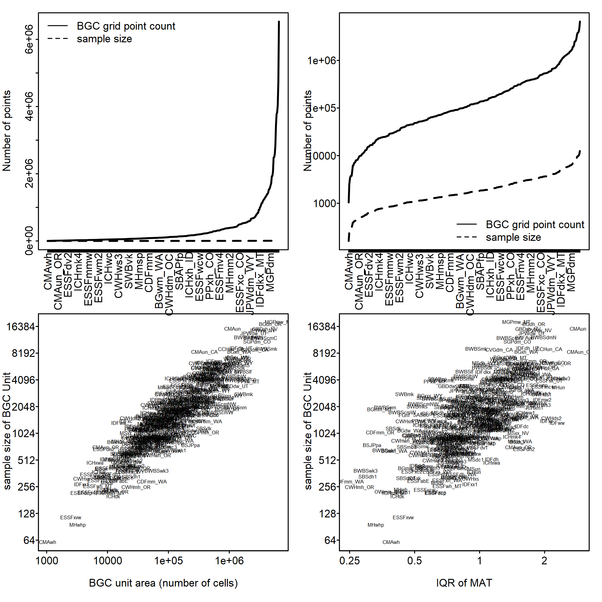
Figure 1: Diagnostic plots for the selected sampling scheme. Top panels show the number of possible points (i.e., pixels) by BGC subzone/variant, organized by smallest to largest BGC unit area on linear (top left) and logarithmic scale (top right), represented by the solid black line. The dashed line represents the number of training points (i.e., sample size). Labels on the x-axis are a subset of the 300+ BGC units represented in the plot. Bottom panels show sample size selected by each BGC unit area (bottom left) and based on the IQR of MAT (bottom right).
4.5.1.2 Climate variable set
At the provincial scale, many variables effectively distinguish between coastal and interior climates, which is useful for broad-scale differentiation. However, these same variables can be less effective in distinguishing nearby BGC units from one another. Thus, to ensure that the retained variables were relevant for both local and regional differentiation, expert knowledge was combined with a local feature selection approach. Specifically, a set of ecologically relevant seasonal and annual climate variables was pre-selected, in addition to several derived variables. Any highly correlated variables were removed at this stage. A list was created, where each BGC unit was paired with all neighbouring BGC units. Separate Random Forest models were run, each with 101 trees, to determine the most important climate variables for each BGC unit, considering only that BGC unit and its neighbouring BGC units. These Random Forest models used the “Gini” split rule, and variable importance was calculated based on Gini impurity. Once a list of variable importance was created for each BGC unit, the most important variables were retained. Care was taken to include even those that may have only been important for a few select BGC units to retain the ability to differentiate between BGC units at a local scale.
In summary, the final expert variable set was chosen based on ecological relevance, low correlation, and high predictive importance within each BGC unit.
4.5.1.3 Random forest model details
To classify BGC units, a Random Forest machine learning model was trained using the ‘ranger’ package in R (Wright and Ziegler 2017). This model was built using 500 decision trees, the extraTrees split rule, and a minimum node size of two, with training points selected according to the sampling scheme and climate variable set outlined above. This model underwent validation and comparison against alternative approaches, including multiple sensitivity analyses to assess robustness, accuracy, and sensitivity to training selection schemes and various model hyperparameters.
4.5.2 Overview of BGC projection trends
Biogeoclimatic projections are illustrated in Figure 2, excerpted from MacKenzie & Mahony (2021). While there is considerable variability in the pace and character of biogeoclimatic projections driven by different climate models, there are some common zone-level trends: the expansion of the IDF analogs northward into the current SBPS zone and into higher elevations in the current MS zone; the expansion of ICH analogs northward into the current SBS zone and into higher elevations in the current ESSF zone; the expansion of CWH analogs into higher elevations in the current MH zone and eastward into the current SBS zone; and the displacement of the current SWB zone by the ESSF analogs. Inter-model differences in precipitation changes are reflected in the biogeoclimatic projections, such as in the expansion of ICH analogs into the central interior in the wetter CanESM2 model instead of IDF analogs in the drier CESM1-CAM5 model. However, the tight relationship between warming and climatic displacement (Figure 1f) suggests that inter-model differences in the rate of displacement of historical climates are primarily driven by the amount and regional pattern of warming.
The biogeoclimatic projections for the 2011-2040 period include the incursion of exotic biogeoclimatic zone analogs into the province; e.g., the Sub-Boreal Aspen Parkland (SBAP) zone from Southeastern Alberta and the Interior Grand Fir (IGF) zone from Northwestern Oregon. In addition to these exotic biogeoclimatic zones, analogs for the projected future climates of BC also include exotic subzone/variants of familiar zones. The largest area of projected exotic subzone/variant analogs is in the boreal northeast of the province, where Albertan subzone/variants of the BWBS zone dominate. In later periods (2050s and 2080s), exotic analogs are also projected in the major valley systems of southern BC and on the south coast.
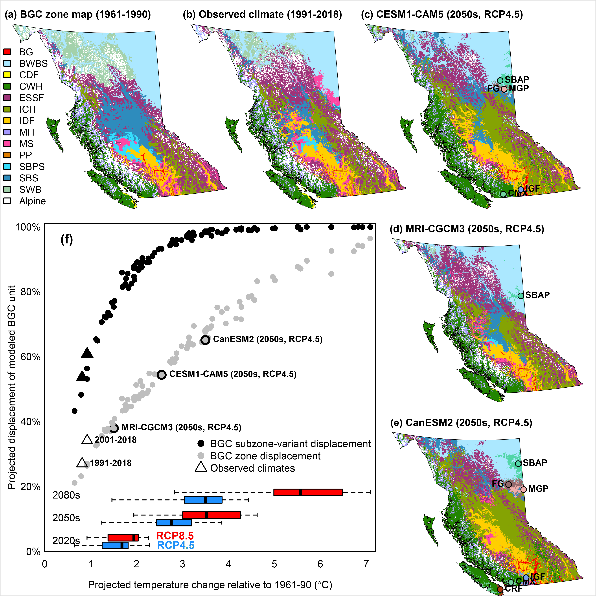
Figure 2: An example of biogeoclimatic projections for British Columbia, excerpted from MacKenzie & Mahony (2021). (a) Mapped biogeoclimatic zones, which encompass the 211 biogeoclimatic subzone/variants used to model tree species suitability. (b) Biogeoclimatic projection of the recent period (1991-2018). (c-e) Biogeoclimatic projections of the 2041-2070 period (RCP4.5) for two GCMs with medium (CESM1-CAM5), low (MRI-CGCM3) and high (CanESM2) regional climate sensitivity. (f) Biogeoclimatic displacement relative to the change in the BC-mean temperature change for each of 90 model projections. Biogeoclimatic displacement is the proportion of grid cells across BC that have a different projected biogeoclimatic unit than their model-predicted biogeoclimatic unit of the 1961-1990 reference period. Boxplots show the full range and 25th-75th percentile range of the temperature change projected by the 15-GCM ensemble in each RCP/time period combination.
4.5.3 Guidance for interpretation of biogeoclimatic projections
4.5.3.1 Evaluating BGC Future Projections
An important consideration when evaluating the quality of any BGC future projection is that, ideally, it should be compared to the baseline of the same model, rather than to the original BEC linework. In some cases, the BEC linework and climate data informing the model might not align. A mismatch between the model and linework does not necessarily indicate an error. Discrepancies between BGC mapping and baseline BGC projections can, in some cases, indicate errors in the BGC mapping, and in others, errors in the baseline climate mapping, and should therefore be interpreted carefully on case-by-case basis rather than assumed to be inaccuracies.
4.5.3.2 Interpreting Spatial Shifts in BGC Projections
Although the visual effect of biogeoclimatic projections is of BGC zones and subzone/variants shifting across the map, these spatial shifts should not be taken literally. No analog is perfect, and projected analogs may be highly imperfect for several reasons. The actual future climate at any location will be a hybrid of (1) the characteristics of the analog climate, (2) novel climatic characteristics (e.g., extremes) that are not represented by the analog, and (3) enduring features of the local climate such as frost pooling, lake effects, and wind patterns. The estimated BGC classifications from any location and time period require careful consideration by the end users of CCISS products.
4.5.3.3 BGC Mapping in a Changing Climate
The misinterpretation of biogeoclimatic projections as literal spatial shifts in BGC units has led to a common perception that climate change is rendering biogeoclimatic mapping obsolete. This is not the case. The linework of biogeoclimatic subzone/variants in many cases will remain useful as units of relative climatic variation across landscapes. The terminology we use for biogeoclimatic projections can help to emphasize that biogeoclimatic analogs are only approximations and that the biogeoclimatic units themselves are not undergoing spatial shifts. Rather than saying “this location is becoming IDFxh1”, it is more correct to say “the future climate at this location is predicted to be similar to the historical climate of the IDFxh1.” Rather than “the IDF is moving north into the SBS”, it is better to say “the SBS is transitioning into more IDF-like climates”.
4.5.3.4 References:
MacKenzie, W. H., and C. R. Mahony. 2021. An ecological approach to climate change-informed tree species selection for reforestation. Forest Ecology and Management 481:118705.
Wright, M. N., and A. Ziegler. 2017. ranger: A Fast Implementation of Random Forests for High Dimensional Data in C++ and R. Journal of Statistical Software 77
4.6 Novel Climate Detection
In the CCISS framework, the pool of historical climate analogs consists of biogeoclimatic (BGC) subzone-variants from British Columbia, Alberta and the Western United States. For each projected future climate, the biogeoclimatic model chooses the most similar climate analog from this analog pool. However, the climates of Western North America do not necessarily represent all potential future climate conditions. There may be substantial differences between the future climate condition and the climate conditions of the biogeoclimatic analog. In such cases, the future conditions are a novel climate. The basic problem of novel climates (poor analogs) is that they give misleading results but are not explicitly identified by the biogeoclimatic model. Detecting novel climates requires an additional step in the CCISS analysis.
CCISS measures climatic novelty relative to the climatic variation of the analog. In each biogeoclimatic projection, we calculate a novelty measurement for each BGC subzone/variant that is being used as an analog. We sample the baseline (1961-1990) climates found across the current geographical range of each BGC subzone/variant, and combine this spatial variation with the 1951-1990 temporal variation of the analog. This pooled spatiotemporal variation is then used to measure the difference between the climate of the analog and the future climates that are assigned that analog in the biogeoclimatic projection. To make this measurement, we use a metric called sigma dissimilarity (Mahony et al. 2017).
Novelty detection for machine learning models is non-trivial and imprecise. The novelty metric provides an indication of where CCISS results may be unreliable or require additional expert input. However, it likely underestimates novelty in some locations and overestimates it in others. Users are encouraged to look at the broader pattern of novelty around their query locations to assess whether their local novelty results are representative. Over time, the CCISS team will develop region-specific interpretations of the drivers of climatic novelty and their ecological implications.
This article describes the CCISS novelty detection methods and results in a coastal case study and at the provincial scale. The goal of this article is to provide users with the ability to interpret novelty results with an understanding of the strengths and limitations of the method.
4.6.1 Definitions
The following are definitions of key terms used in this article:
- Baseline — The historical climate used to compare observed climates of more recent periods or simulated future climates. The CCISS baseline period is 1961-1990.
- Target — The current or future climate condition for which a historical analog is identified, and for which novelty is being measured. In CCISS, these are climatic averages over 20-year periods (2001-2020 through 2081-2100) for locations throughout BC.
- Analog — The baseline climate condition assessed as being most similar to the target condition, among a set of candidate analogs. The analog pool for CCISS is the 1961-1990 climates of the biogeoclimatic subzone-variants of Western North America.
4.6.2 The novelty metric – sigma dissimilarity
The basic question we are asking in novel climate detection is: “how similar is the future climate condition to the climatic conditions of the historical climate analog.” A statistical rephrasing of this question is: “what is the probability that the future climate condition was drawn from the same distribution as the climatic conditions of the historical analog?” Mahalanobis distances are commonly used to answer this type of question. Following Mahony et al. 2017, we translate Mahalanobis distances into a novelty metric called sigma dissimilarity.
4.6.2.1 Mahalanobis distance
The typical understanding of distance is Euclidean distance, in which a line of equal distance from any point has the shape of a circle or sphere. The problem with Euclidean distance for novelty detection is that it doesn’t account for correlations among variables. If variables are correlated (as climate variables often are), the standardized Euclidean distance will overestimate the novelty of some points and underestimate the novelty of others. Mahalanobis distance overcomes this problem by accounting for correlations among variables (Figure 1). Instead of following concentric circles like Euclidian distances do, Mahalanobis distances follow ellipses with eccentricity that matches the correlation of the data. Assuming multivariate normality, Mahalanobis distances represent lines of equal probability that a new observation is an outlier. Mahalanobis distances are equivalent to standardized Euclidean distances in the principal components of the variables.
4.6.2.2 Sigma dissimilarity
Mahalanobis distance is not in itself an adequate metric of novelty because the statistical meaning of distances depends on the number of dimensions in which the distances are measured. Since CCISS uses different numbers of principal components for different BGC analogs, these dimensionality effects are important. Thus to obtain an intuitive and statistically consistent novelty metric that can be used to compare across analogs, we use sigma dissimilarity (Mahony et al. 2017).
4.6.2.2.1 Theory of sigma dissimilarity
The effect of dimensionality on the probabilities of distances can be visualized using a random sample from a multivariate normal distribution (Figure 2a). In any one dimension (either the x or y axis), there is a 68% probability that an observation will be within one standard deviation of the mean. In other words, 68% of the points are expected to have a distance from the mean of less than one. In two dimensions, the probability that an observation will fall within a distance of one from the centroid is reduced to 39%. As the number of dimensions increases, even more observations fall outside a distance of 1, such that all observations become increasingly distant from their own mean.
The probability of multivariate normal distances (and therefore Mahalanobis distances) are described by the chi distribution with degrees of freedom equaling the dimensionality of the data (Figure 2b-c). Chi percentiles can be expressed using the terminology of univariate z-scores; i.e., 1, 2, and 3 sigma (σ) for the 68th, 95th, and 99.7th normal percentiles, respectively. The chi distribution in 1 dimension is a half-normal distribution, and the sigma levels correspond to distance. This result is expected because Mahalanobis distances in one dimension are the absolute values of z-scores. At increasing dimensionality, the sigma levels shift away from the origin. For example, 1σ (the 68th percentile) occurs at Mahalanobis distances of 1.0 in one dimension versus 1.5 in two dimensions (Fig 2b, c). By extending sigma levels into multiple dimensions, sigma dissimilarity serves as a multivariate z-score.
4.6.3 Novel climate detection in CCISS
To measure climatic novelty with sigma dissimilarity, we need to define the variation that the Mahalanobis distance is proportioned to. The question we are asking is “novel relative to what?”
Since CCISS uses biogeoclimatic (BGC) subzone-variants as climate analogs, it is primarily interested in whether the target (future) climate matches the baseline (historical) climate of any location within the analog. In other words, CCISS is most interested in measuring novelty relative to the spatial climatic variation of the analog. However, we have also found it necessary to include the interannual climatic variability (ICV) of the analog into the measurement (see rationale below). Therefore, we measure novelty relative to the spatiotemporal climatic variation of the analog. This is different from the approach of Mahony et al. (2017), who defined novelty relative to the interannual climatic variability of the target climate.
Novel climates detection in CCISS is done separately for each BGC analog, in three steps:
- Principal components analysis (PCA) – conduct a PCA on an equal sample of spatial variation in baseline and target climates of the analog, and choose a subset of the PCs that represent 95% of the variance in this pooled sample;
- z-standardization – standardize the retained PCs so that the pooled analog spatial climatic variation and ICV have a mean of 0 and a standard deviation of 1; and
- Measure sigma dissimilarity of target (future) climatic conditions. This approach measures dissimilarity from the target climate to the average climate of the BGC analog rather than to the most similar (potentially peripheral) location within the analog.
4.6.4 Rationale
4.6.4.1 In step 1, why is the PCA done on a combination of the baseline and target climates?
Mahalanobis distance can be unstable if all PCs are included. For this reason, we retain only 3-6 PCs that describe 95% of the variance in the data. However, there is no guarantee that the major principal components of the analog’s spatial climatic variation include the ways in which the future climate is different than the analog climate. In other words, distance measurement in the primary modes of spatial variation could be blind to the primary modes of climate change. This would cause underestimation of novelty. To ensure that the differences between the future climates and the analog climate are detected, we conduct the PCA on a combination of spatial variation in both the analog and target climates.
4.6.4.2 In step 2, why are the PCs standardized to both spatial and temporal variation of the analog?
Scaling the novelty metric to spatial variation alone has two important shortcomings. First, very small BGC subzone/variants often have much less climatic variation relative to larger ones simply due to their size. This can lead to overestimation of climatic novelty for small subzone/variants. Second, spatial variation can be very low in the modes of climate change, especially for analogs that are located on flat terrain. Measuring climatic distances in PCs standardized to very low spatial variation can result in artificially high sigma dissimilarity. To make the novelty metric more robust, we include interannual climatic variability (ICV) in the z-standardization. Specifically, we pool the analog’s spatial climatic variation with the climate values of each year in the 1951-1990 period. A 40-year sample is used because it is more robust than 30 years. The ecological rationale for including ICV is that a future condition can be considered less novel if it is similar to individual years in the baseline climate instead of being entirely unprecedented. The effect of this modification is to reduce novelty in small and/or topographically simple BGC analogs.
4.6.5 Variable selection
Novelty should be measured in climate variables that are ecologically meaningful and relevant to the variables that were used to identify the climate analog. Superficially, it seems logical to measure novelty using the variables that were used to train the biogeoclimatic model. However, there are two reasons why the input variables to the BGC model are not necessarily the most appropriate for novelty measurement.
- Machine learning doesn’t use input variables equally for differentiating each potential analog from its neighbours. For example, the variable selection and thresholds used to differentiate grassland from forest climates are likely to be different from those used to differentiate subalpine from alpine climates. Mahalanobis distance, in contrast, is blind to the variables that differentiate the focal analog from its neighbours and instead emphasizes the modes of spatial and temporal variation of the analog itself. As a result, even if both the BGC model and the novelty detection were given the same input variables, their results would not necessarily be any more consistent than a novelty detection with different input variables.
- Mahalanobis distance relies on the assumption of multivariate normality, i.e., that the analog variation can be approximated with a hyperellipse. While this assumption generally holds for temperature and log-transformed precipitation variables, it can be severely violated by the bioclimatic variables often used in biogeoclimatic modeling, such as degree-days and climatic moisture deficit. Violations of the multivariate normality assumption can cause large novelty artefacts.
For those reasons, CCISS novelty detection uses a basic 12-variable set of Tmin, Tmax, and precipitation of the four seasons.
4.6.6 Threshold selection
Novelty is a continuum. Further, the novelty measurement is prone to error because the relevant climate variables and ecological responses are unknown and specific to each ecosystem and tree species. Hence there is no objective basis for a threshold of sigma dissimilarity above which a target climate can be labelled as a novel climate. Nevertheless, it is necessary to establish a threshold of novelty above which BGC analogs will not be used to make inferences of future species suitability. If this threshold is set too high, CCISS will make invalid and misleading inferences. If the threshold is too low, useful information may be discarded.
The CCISS tool uses a default dissimilarity threshold of 5-sigma (5\(\sigma\)) to infer a novel climate and discard the biogeoclimatic analog. 5\(\sigma\) is a low bar to meet for analog goodness of fit. Assuming multivariate normality, it corresponds to a 1-in-3,500,000 chance that the target climate would occur within the analog’s geographical range and/or interannual climatic variability. However, given the many potential sources of error in the CCISS novelty measurement, 5\(\sigma\) novelty could be more likely in some cases. This threshold provides a reasonable balance between the risks of making an invalid inference vs. discarding useful information.
The CCISS tool also indicates the proportion of each species suitability projection that is in the 3-5\(\sigma\) range. 3\(\sigma\) corresponds to a 1-in-370 event within the analogs spatiotemporal climatic variability. Novelty in the 3-5\(\sigma\) range can be interpreted as a poor analog. In this range, species suitability inferences may be useful but are also likely to be somewhat misleading.
4.6.7 Case study – CWHxm_WA
To illustrate the interpretation of climatic novelty in biogeoclimatic projections, we use the example of the CWHxm_WA subzone (Coastal Western Hemlock very dry maritime, Washington variant), which spans the Puget Lowlands in Washington State from the hilltops of the San Juan Islands to Portland, Oregon (Figure 3). The baseline 1961-1990 climate of the CWHxm_WA is widely used as an analog for current and future climates of the near-shore lands surrounding the Strait of Georgia including Greater Vancouver.
The variation of the baseline analog climates and the target climates are quantified in a PCA scree plot (Figure 4). The basic interpretation of the scree plot is that there are 12 PCs because there are 12 input variables each standardized to unit variance (st. dev. = 1). Since the PC was performed on the combined target and analog climates, PC1 is the primary mode of separation between the target and analog climates. PC2 contains the most spatial variation in the analog and target climates but very little separation of their means, as visualized in Figure 5b. Subsequent PCs contain decreasing spatial variation of analog and target climates, such that 95% of the variance in the pooled data is contained within the first four PCs. This was the criterion for exclusion of PCs 5-12. ICV variation does not decline as quickly because it was excluded from the PCA.
The climatic novelty of the CWHxm_WA target climates can be further visualized in the context of the baseline climates of Western North America (Figure 6). These projected 2041-2060 climates (yellow to red points) have no overlap with the spatial climatic variation of Western North America. The CWHxm_WA (blue points) is the best (i.e., most similar) available analog for these future climatic conditions, but it is a poor analog at best (yellow points) and a non-analog at worst (black points). The primary mode of novelty is positively correlated with mean summer nighttime temperature (Tmin_sm), but is also somewhat correlated with spring and autumn Tmin. Since the mode of novelty is relatively uncorrelated with precipitation and daily maximum temperatures, the CWHxm_WA may be an informative analog for ecological drivers, such as drought, that are primarily dependent on these variables. This illustrates how a climate analog can be useful for some interpretations, but misleading for others.
4.6.8 Provincial-scale results
4.6.8.1 Novelty over time
Figure 7 shows the progression of climatic novelty over time in a global climate model simulation of 21st century climate change. Even in the baseline period (1961-1990), scattered locations have some degree of novelty from their model-predicted biogeoclimatic unit (Figure 7a). This baseline novelty can be due to (1) spatial climatic variation within a BGC that violates the assumption of multivariate normality (isn’t elliptical in shape) and (2) baseline model predictions that differ from the BEC mapping. Overall, however, there is a very low degree of novelty in the baseline period, as would be expected.
Novelty in the simulated 2001-2020 climate is also generally low (Figure 7b), with notable novelty inferred only in small areas of the Peace region foothills of northeastern BC and the Tatshenshini-Alsek Provincial Park in northwestern BC. By midcentury (Figure 7c), there is widespread inference of moderate novelty (3-5σ; yellowish colours), indicating poor analogs in these areas. However, the majority of the province still has good analogs in this period (0-2σ; grey colours). By the end of the century (Figure 7d), moderately to highly novel (>5σ) climates occupy most regions of the province. Highly novel climates are projected for northeastern BC, the coast, the Chilcotin Plateau and the southern interior.
4.6.9 Climate model variation
There is considerable variation among global climate models in the magnitude of climatic novelty (Figure 8). Some of this variation is due to different warming rates in the models, as indicated by the similarity in spatial patterns of novelty among models. However, there is also variation among models in the level of novelty at each warming level (Figure 9). For example, the MIROC6 model induces approximately half of the novelty as the GISS model at warming levels above 20B0C.
4.6.10 Sensitivity Analysis
This section provides sensitivity analyses demonstrating the effect of key methodological decisions, namely variable selection, PC truncation rules, and how to balance spatial and temporal variation (ICV) in the standardization. Unless otherwise stated, sensitivity analyses use the EC-Earth3 r4i1p1f1 SSP2-4.5 simulation at the 2041-2061 time period.
4.6.10.1 Variable selection
The sensitivity of novelty to variable selection is illustrated in Figure 10. Both variable sets produce common regions of novelty, such as on the coast, southern Kootenays, and northeast BC, though the basic variables detect a lesser degree of novelty on the coast. The high-novelty region in the northern Columbia mountains in Figure 10b is likely an artefact of multivariate normality violation in degree-day and reference evaporation variables, which can have many zeros and highly skewed distributions. The disagreement between the two variable sets in the western Chilcotin is more enigmatic and deserves further investigation.
4.6.10.2 Balance of spatial and temporal variation
Novelty is highly sensitive to the relative weight of spatial and temporal variation. When interannual climatic variability (ICV) is excluded from the novelty measurement (Figure 11a), novelty is extreme in areas of interior BC with low topographic relief. This is primarily due to the modes of climate change being different from the few modes of spatial climatic variation on flat terrain. Conversely, when spatial climatic variation is excluded (Figure 11d), novelty is greater on the coast. This is due to lower interannual climatic variability in maritime climates and the prevalence of spatially large biogeoclimatic subzone/variants in the coastal classification. The contrasting drivers of coastal and interior novelty balance each other at intermediate ICV weights (Figure 11b-c). We chose an ICV weight of 0.5 for novelty detection in CCISS.
4.6.10.3 Dimensionality (PC truncation rule)
The CCISS novelty method retains PCs with a cumulative variance of 95% of the total data variance. Consequently, the dimensionality of the sigma dissimilarity differs among analogs, within the range of 4-6 PCs. Figure 12 illustrates the effect of dimensionality on novelty by measuring sigma dissimilarity at a uniform number of PCs throughout BC. In general, novelty increases when more PCs are retained because there are more modes of variation for future conditions to be different from their analog. However, the CCISS novelty method is not highly sensitive to the dimensionality of the measurement (Figure 12). This indicates that the results of novelty detection do not hinge on the decision to the 95% variance criterion vs. other potential truncation rules.
4.6.10.3.1 References:
Mahony, C.R., A.J. Cannon, T. Wang, and S.N. Aitken. 2017. A closer look at novel climates: new methods and insights at continental to landscape scales. Global Change Biology 23: 3934–3955.
4.7 Aligning Site Series (Edatopic Overlap)
4.7.1 The edatopic grid
In the BEC system, variations in site conditions within each climate type (i.e., biogeoclimatic subzone/variant) are represented by an edatopic grid. An edatopic grid has 8 relative soil moisture regimes (SMRs) and 5 soil nutrient regimes (SNRs). Each cell in this grid, called an edatope, is the combination of one SMR and one SNR, and represents the finest scale of site differentiation in the BEC system. A site series is a group of edatopes over which a classified BEC Plant Association has been observed to occur. The distribution of site series across the edatopic grid is unique to each biogeoclimatic subzone/variant.
4.7.2 Site series misalignment
In the CCISS analysis, the edatope of each location of interest remains constant as the climate changes. If species suitability ratings were specified for each edatope, and if the edatope of the location of interest were known, then there could be a direct transfer of species suitability from the future BGC analog to the location of interest. However, species suitability ratings are at the site series level, and typically the management decision is also being made at the site series level. This creates a problem for the CCISS analysis: since the edatopic distributions of corresponding site series at any edatope do not align among the BGC subzone/variants, there is ambiguity about which site series of the projected future BGC subzone/variant is the correct one to choose for any site series in the historical climate.
The problem of site series alignment is illustrated in Figure 1. In this example, the historical site series of interest is the 09 site series, which occupies four edatopes: D5, D6, E5, and E6 (left panel). The BGC subzone/variant analog for the future climate has three site series that overlap with this edatopic space: 07, 08, and 09 (right panel). Tree species suitability ratings from each of these three site series are applicable to the historical site series 09.
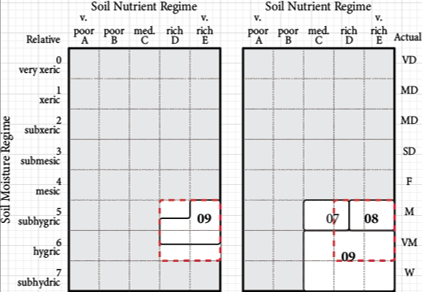
Figure 1: Example of the misalignment of site series of a historical BGC subzone/variant (left) and the BGC subzone/variant analog for its projected future climate (right).
4.7.3 Weighting site series contributions to CCISS suitability projections
Instead of choosing a single “best match” analog site series, the CCISS tool uses all analog site series weighted by their overlaps with the historical site series (Figure 2). There are two directions of overlap: forward overlap (how much of the historical site series is covered by the analog site series), and reverse overlap (how much of the analog site series is covered by the historical site series). Overlaps are measured at the edatope level: partial occupancy of a site series in an edatope is counted as a full edatope. In the example from Figure 1, the historical 09 and analog 07 site series have a forward overlap of 25% and a reverse overlap of 50%. These overlaps are multiplied to produce an overlap agreement of 12.5%. After rescaling the overlap agreements by 1.273 so that they sum to 100%, the contribution of the 07 site series to the projected tree species suitability is 16%.
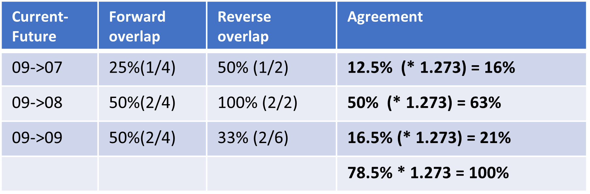
Figure 2: Calculation of the overlap agreement for the example shown in Figure 1. Overlap agreement is weight of each site series to contribute its tree species suitability ratings to the CCISS projection for the historical site series of interest.
Extra-edatopic site series (e.g. floodplains) are aligned to similar types by predefined rule sets (e.g., historical high-bench floodplain site series aligned to analog high-bench floodplain site series).
4.8 CCISS Rulesets
To account for uncertainty in future climates, CCISS uses a suite of 8 global climate models (GCMs) and 3 emissions scenarios (SSPs). This strategy usually leads to multiple projected biogeoclimatic subzone/variants (BGC units) for each requested location (as shown in the “BGC Futures” tab) and thus, a range of projected suitabilities. While it is often informative to observe the full distribution of projected suitabilities, CCISS also uses rulesets to “summarise” the projected suitabilities into a single value.
4.8.1 CCISS Suitability
For each future period, the raw output of CCISS projections consists of possible suitability values (E1-high suitability, E2-moderate suitability, E3-low suitability, or X-not suitable) for each climate model/emissions scenario combination, i.e. a “vote” for a given suitability. (Note that due to overlapping edatopic space, there is often not a one-to-one match between models and suitability values. See the “Methods - Edatopic Overlap” tab for a detailed explanation of edatopic overlap.) To summarise these votes into a single “projected suitability” for each tree species at each requested location, we use the following equation:
\[ \text{Projected Suitability} = P(E1) + 2P(E2) + 3P(E3) + 5P(X) \]
where \(P(s)\) represents the proportion of votes for suitability \(s\) and \(P(E1) + P(E2) +P(E3) + P(X) = 1\). In essence, this is a weighted average of the suitability values, with slightly higher weight on non-suitable predictions. (Note that the E4 suitability class is not yet been incorporated into the CCISS model. For more information see “Methods - Suitability ratings”)
4.8.2 Establishment and Maturity
Using the projected suitability described above, CCISS then further summarises these ratings over multiple time periods into an Establishment Suitability and a Maturity Suitability. Both of these are calculated as weighted averages of period-wise suitability: Establishment Suitability uses 1961-1990 (historic environmental suitability), 2001-2020, and 2021-2040 projected suitabilities, while Maturity Suitability uses all future periods (2021 - 2100). The weighting of the different periods are adjustable in “Model Parameters”, and are by default almost equally weighted.
There is one exception to the Establishment Suitability values: if a species is listed as historically unsuitable, but has a E1, E2 or E3 Maturity Suitability, it gets listed as a “Trial” in Establishment Suitability.
4.8.3 Preferred/Acceptable
In order to align with the Chief Forester’s Reference Guide, CCISS also creates a projected Preferred/Acceptable rating, based on species-specific suitability cutoffs and the Maturity Suitability (described above). The CCISS tool uses these in the “Summary” suitability view, as well as in the exported data. For most conifer species, a suitability of E1 or E2 translates to \(P\) (preferred), and a suitability of E3 translates to \(A\) (acceptable). There are a few exceptions, such as Hm (mountain hemlock), which is only assigned \(P\) with a suitability of E1. With the exception of Oaks, most broadleaf species are not assigned a \(P/A\) value. This may be updated as additional information on broadleaf suitability becomes available.
4.9 OHR – “Outside Home Range” Suitabilities
The term “outside home range” (OHR) refers to tree species environmental suitability ratings that have been assigned in a geographical area (i.e. biogeoclimatic subzone-variant) where the species does not occur naturally. In some cases, OHR species were restricted by something other than climate, such as migration limitations (for example, western larch) or forest health factors (for example, Western white pine limited by blister rust). We have added an environmental suitability rating for OHR species for which there is strong evidence that they were well suited to the climatic regime of the historical reference period (1961-1990) that the species environmental suitability ratings are based on.
Strong evidence includes species that have been capable of successful establishment, productivity, and resilience in an area for at least several decades as evidenced in long-term plantings of the species. In other words, the area lies within the species’ historic fundamental, but not realized, niche. These trees may not occur naturally in the area of interest (AOI) due to low migration rates, geographic isolation, or other non-climatic factors, but will likely be successful in this area immediately.
4.9.1 OHR suitabilities included in CCISS
Currently, CCISS includes OHR occurrences of western larch (Lw), Douglas-fir (Fd), and Western white pine (Pw), supported by the following evidence:
Lw - Range modelling using historic climates strongly suggests the suitability of western larch beyond its historical range (Rehfeldt & Jaquish 2010).
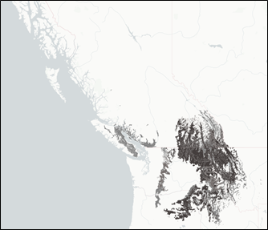 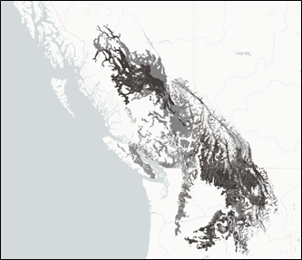
Figure 1. Range and environmental suitability of western larch in grey, historical range (left) and including OHR ratings (right) from the By-BEC tool. Darker colours represent higher suitability ratings in that BEC subzone-variant.
Fd - Successful operational and research off-site trials >30 years of Douglas-fir in the AOI. E.g plantations in the ICHmc2 of the Skeena region. Extrapolated suitability into intermediate site or climatically similar areas. E.g. Douglas-fir added to SBSdk and ICHmc2 based on plantation evidence – extend into the ICHmc1 which is both a climatic and geographic intermediate between the two.
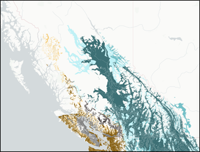 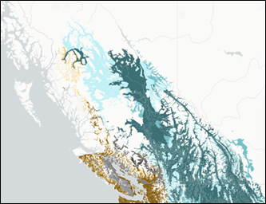
Figure 2. Range and environmental suitability of Douglas-fir, historical range (left) and including OHR ratings (right) from the By-BEC tool. Brown represents coastal Douglas-fir, blue represents interior Douglas-fir, darker colours represent higher suitability ratings in that BEC subzone-variant.
Pw - Successful operational and research off-site trials >30 years of Western white pine in the AOI. E.g plantations in the ICHmc2 of the Skeena region.
Note: OHR suitability ratings are incomplete for Pw, resulting in a large distance between the historical range of Pw and OHR suitabilities currently included in CCISS. A fuller scale review and rating of OHR Pw (and other species) is currently in progress.
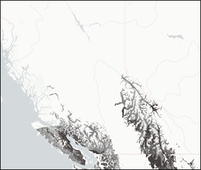 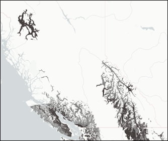
Figure 3. Range and environmental suitability of Western white pine in grey, historical range (left) and including OHR ratings (right) from the By-BEC tool. Darker colours represent higher suitability ratings in that BEC subzone-variant.
4.9.2 Caveats and considerations for application
We have included OHR species where reasonable evidence exists to harness the best available knowledge and more accurately capture the species’ fundamental climate niche. Species like western larch are being actively managed and planted outside of their historical range. Excluding OHR species would limit the effectiveness of the CCISS tool to inform current forest management practices.
However, often suitability to the historical baseline climate (1961-1990) is not proven. Successful operational and research trials that extend well into the 1961-1990 period are less common. There are limitations to range models and there is uncertainty in suitability extrapolated into intermediate or climatically similar areas. We have included the option to remove OHR suitability ratings from CCISS projections as there is less certainty in the accuracy of these ratings. There is some hesitation around projecting off-site species into future climate given the already high levels of uncertainty in assisted migration. Users should interpret the results with caution and use other lines of evidence and local knowledge when making decisions.
As with all species planted in an assisted migration framework, risks associated with planting off-site tree species will also depend on climatic factors, including the (i) climatic distance between current and future climates in a region, (ii) uncertainty in projected future climates, and (iii) current climatic variability and extreme events beyond the tolerance of species.
4.9.3 Functionality in the CCISS tool
If you click the “MODEL PARAMETERS” button on the home page, you have the option to toggle OHR species on or off. If OHR species is “on” future species environmental suitability will include projections based on OHR species ratings. If “remove OHR suitabilities” is selected future species suitability projections will not be based on suitability ratings outside of a species’ home range.
Figure 4. Option to toggle OHR species on (left) or off (right) in the CCISS tool.
You can also toggle OHR “on” or “off” when viewing the Feasibility Report.
4.9.3.1 References
Rehfeldt, Gerald & Jaquish, Barry. (2010). Ecological Impacts and Management Strategies for Western Larch in the Face of Climate-Change. Mitigation and Adaptation Strategies for Global Change. 15. 283-306. 10.1007/s11027-010-9217-2.
4.10 BEC 13
This version of CCISS uses BEC13, which includes the biogeoclimatic classification published in LMH77.
4.10.1 LMH77 Updates
LMH77 replaces the previously published site identification field guide for the Vancouver Forest Region (Green and Klinka 1994) and portions of the guide for the Prince Rupert Forest Region (Banner et al. 1993). The classification presented here differs from previous classifications in several ways:
- the reclassification of the Coastal Western Hemlock Very Dry Maritime (CWHxm) to the Dry Maritime CWH (CWHdm); the Central variant (CWHdm1) and the Western variant (CWHdm2) replace the CWHxm1 and CWHxm2, respectively, and the Eastern variant (CWHdm3) replaces the lower mainland portion of the old CWHdm;
- the retirement of the CWH Southern Moist Submaritime variant (CWHms1), now reclassified and split into three new variants: the southern CWH Moist Submaritime Submontane (CWHms3), Montane (CWHms4), and Subcontinental (CWHms5);
- the retirement of the CWH Central Moist Submaritime variant (CWHms2), now reclassified to the Central Wet Submaritime CWH variant (CWHws3);
- the reclassification of the Interior Douglas-fir Wet Warm (IDFww), now split into two biogeoclimatic units: the IDFww in the south coast and the ICHun in the central coast;
- a new south coast subzone of the CWH zone is described, the Very Dry Submaritime (CWHxs) replacing portions of the previous distribution of the Interior Douglas-fir Wet Warm (IDFww);
- the previous Submontane variant of the CWH Very Wet Maritime subzone (CWHvm1) is now split into a Southern Submontane variant (CWHvm1) and a Northern Submontane variant (CWHvm3);
- the previous Montane variant of the CWH Very Wet Maritime subzone (CWHvm2) is now split into a Southern Montane variant (CWHvm2) and a Northern Montane variant (CWHvm4);
- a new central/north coast subzone of the Mountain Hemlock zone is described, the MH Very Wet Hypermaritime (MHvh) replacing the previous distribution of the mainland MHwh;
- a new northern subzone of the MH zone is described, the Moist Submaritime MH (MHms) replacing a portion of the previous distribution of Moist Maritime Leeward MH variant (MHmm2);
- the mapping of biogeoclimatic units has been revised: reduction of the IDFww resulting in increased areas of CWHds and creation of the ICHun and CWHxs; reduction of the CWHdm (now the CWHdm3) resulting in increased area and mainland distribution of the CWHdm2; CWHvm1 and CWHvm2 north-south split; northern CWHvh1 distribution reduced southward resulting in increased area and Vancouver Island distribution of the CWHvh2; MHvh replacing MHwh; and numerous other minor boundary and elevational shifts
Reference: LMH77 Chapter 1
4.10.2 Crosswalk Tables for BGC subzone-variants
Crosswalk tables of names of coast classification units used in BEC13 (LMH77) and in BEC12 (previous guides LMH26 Banner et al. 1993; LMH28 Green and Klinka 1994) are provided in table below.
| BEC13 | BEC12 |
| CDFmm | CDFmm |
| CMAun | CMAun, CMAunp in part (alpine split from parkland) |
| CWHdm1 | CWHxm1 |
| CWHdm2 | CWHxm2 |
| CWHdm3 | CWHdm |
| CWHds1 | CWHds1 |
| CWHds2 | CWHds2 |
| CWHmm1 | CWHmm1 |
| CWHmm2 | CWHmm2 |
| CWHms3 | CWHms1 in part |
| CWHms4 | CWHms1 in part |
| CWHms5 | CWHms1 in part |
| CWHvh1 | CWHvh1 |
| CWHvh2 | CWHvh2 |
| CWHvm1 | CWHvm1 |
| CWHvm2 | CWHvm2 |
| CWHvm3 | CWHvm1 |
| CWHvm4 | CWHvm2 |
| CWHwm | CWHwm |
| CWHws1 | CWHws1 |
| CWHws2 | CWHws2 |
| CWHws3 | CWHms2 |
| CWHxs | IDFww |
| ICHun | IDFww - central coast |
| IDFww | IDFww, IDFww1 – south coast-interior transition |
| ESSFun | central coast portion of ESSFmw |
| MHmm1 | MHmm1 |
| MHmm2 | MHmm2 |
| MHmmp | MHmmp, CMAunp in part (parkland split from alpine) |
| MHms | Portions of MHmm2 in part, ESSFwv in part, ESSFun in part |
| MHmsp | Portions of MHmmp in part, ESSFwv in part, ESSFunp in part |
| MHun | MHun, portions of MHmm2 north of Stewart |
| MHunp | MHunp, MHmmp north of Stewart |
| MHvh | MHwh1 mainland |
| MHvhp | MHwhp, CMAunp in part (parkland split from alpine) |
4.11 CCISS Expert Review
4.11.1 As of April 2025
Given the complexity of forest ecosystems and climate change impacts on tree species, it is essential that the CCISS tool undergoes evaluation by experts. In 2024-25, the BC Ministry of Forest (FOR) Ecologists conducted a review of the following aspects of the CCISS tool (outlined below). We are currently engaging with additional subject matter experts to provide a review, including silviculturists, forest health specialists, and tree breeders.
4.11.2 1. Tree Species Environmental Suitability Ratings
The initial environmental suitability ratings were assigned in 2017 by A. Banner (Coast and North Area), T. Braumandl (Kootenay-Boundary and Thompson-Okanagan), W. MacKenzie (Alberta), and D. Meidinger (USA). A subsequent review of this output in 2018-2019 led to some clarification of definitions and modifications of initial ratings, which were reviewed again by regional experts in 2021. In 2024/25, further discussions between CCISS team members and FOR Ecologists led to a review of and several modifications to suitability rating definitions. Using the updated documentation and rating process outlined above, the FOR Ecologists began reviewing species suitability ratings in their respective regions in February 2025. The objective of this latest review was to refine the suitability ratings using expert knowledge and other available information sources, to assist with filling in gaps, and to document known issues for further follow-up in the future. The resulting suitability ratings provide a strong scientific foundation and a consistent baseline for further refinement using quantitative methods. The FOR Ecologist review is complete for the Coast Area, Omenica, Cariboo, and Thompson-Okanagan regions as of March 2025, and in progress for the Kootenay Boundary, Skeena and Northeast regions as of April 2025. See Ratings of Tree Species Environmental Suitability (Collins et al. 2025), available from the BC Data Catalogue, for a full overview of the suitability process to date.
4.11.3 2. Tree Species Environmental Suitability Definitions
FOR Ecologists have provided feedback on the supporting documentation and definitions of Tree Species Environmental Suitability ratings. An in-person meeting with the FOR Ecology team to review CCISS model results and the historical species suitability ratings took place in November 2024. Per request of the Ecology team, the CCISS team developed new documentation outlining definitions and a multi-step rating process for species environmental suitability ratings, which we presented back to the Ecology team in December 2024. The CCISS team incorporated two rounds of revision to the Species Environmental Suitability ratings documentation resulting in a final version as of February 2025.
See the “Methods - Suitability Ratings” tab for more information.
4.11.4 3. CCISS Tool Results
FOR Ecologists are core subject matter experts for CCISS and we have engaged this group to perform an initial review of CCISS tool results. The Ecologist review will provide insight into the CCISS tool’s ecological accuracy and alignment with current ecological knowledge, help identify issues, and inform readiness for broader implementation. An in-person meeting with the Provincial Ecology team to review CCISS model results and the historical species suitability ratings took place in November 2024. All Ecology team members have used and interacted with the CCISS tool, documenting issues they identified with CCISS model results via Github issues. In addition to feedback provided through GitHub, we held individual meetings for each Forest Region to gather an initial round feedback in March 2025. This review is ongoing and iterative as we incorporate updates to the inputs (e.g., suitability ratings) and models (e.g., BGC model).
4.11.5 4. CCISS Tool Layout and Documentation
FOR Ecologists have also provided feedback on aspects of the layout of the CCISS tool, information presentation, and supporting documentation.